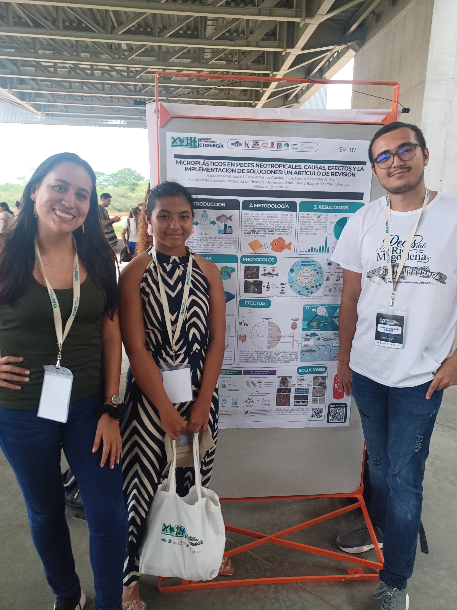
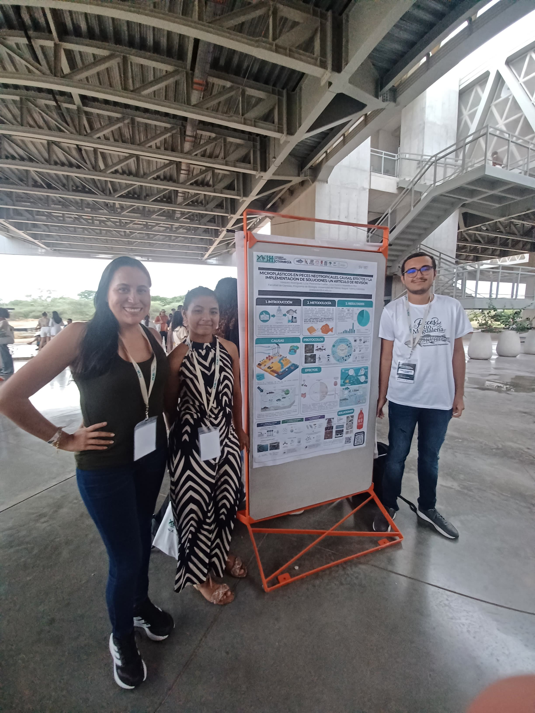

Luisa
Vásquez
Estudiante de décimo semestre de Biología · Universidad del Tolima.
Ver participación ↗Somos Luisa Juliana Vásquez y Juan Diego Piedrahita, estudiantes de décimo semestre de Biología de la Universidad del Tolima.
Junto con nuestra profesora Adriana Forero, desde la asignatura Peces Neotropicales, desarrollamos un trabajo de búsqueda, organización y divulgación científica alrededor de los microplásticos en peces.
El proyecto final se convirtió en una base de datos pensada no solo para reunir información científica, sino también para hacerla más fácil de explorar, comparar y comunicar.
Nuestro objetivo fue recopilar y organizar información científica sobre la presencia de microplásticos en peces, identificando especies, localidades, ambientes, cuerpos de agua, tipos de microplásticos y metodologías empleadas en diferentes estudios. A partir de esta recopilación construimos una herramienta de consulta y divulgación que permite acercarse al problema desde una mirada biológica y científica.
Tres miradas que se encontraron en una misma pregunta: ¿qué nos está diciendo la evidencia científica sobre los microplásticos en peces?
Estudiante de décimo semestre de Biología · Universidad del Tolima.
Ver participación ↗Estudiante de décimo semestre de Biología · Universidad del Tolima.
Ver participación ↗Profesora de la asignatura Peces Neotropicales · Universidad del Tolima.
Ver acompañamiento ↗La página no busca reemplazar los artículos científicos. Busca servir como una puerta de entrada hacia ellos.
Localizar estudios científicos relacionados con microplásticos y peces.
Extraer y estructurar información comparable entre artículos.
Conectar especies, lugares, metodologías y tipos de microplásticos.
Transformar la base en una experiencia visual, interactiva y educativa.




Esta investigación terminó convirtiéndose en una experiencia para consultar artículos, explorar especies, observar patrones geográficos y acercarse a las metodologías utilizadas para estudiar microplásticos.